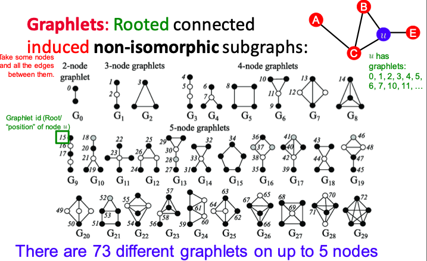

CS224W: Machine Learning with Graphs
(I dropped this class a few lectures in, so the notes are incomplete. Nonetheless, it contains some interesting connections with graphs/networks, so I leave it in my knowledge graph.)
Introduction
Why Graphs?
Graphs are a general language for describing and analyzing entities with relationships/interactions. Many domains have a natural relational structure, that lends themselves to a graph representation:
- Physical roads, bridges, tunnels connecting places. 🚗
- Particles, based on their proximities. ⚛️
- Animals in a food ecosystem. 🕸
- Computer networks. 💻
- Knowledge graphs, scene graphs, code graphs…
Distinction between Networks and Graphs
Networks = "natural graphs." (social networks, electronic networks, genetic pathrways, brain connections)
Graphs = a mathematical object representing/modeling the underlying data.
(Sometimes this distinction is blurred.)
Today's ML toolbox is good at processing grids (images) and sequences (speech/text.)
However, not everything is best represented as a sequence or grid.
Why is Graph Deep Learning hard?
- arbitrary size, topological structure
- no fixed node ordering, reference point
- dynamic, multimodal

Representation learning
We can learn directly on graphs, rather than feature engineering.
General strategy: map nodes to \(d\)-dimensional embeddings such that similar nodes are embedded close together.
Applications of Graph ML
Different tasks we can do:
- graph => prediction
- => generate graph
- graph => subgraph
- node => prediction
- edge => prediction
- missing links
- clustering
- evolution
Node-level: AlphaFold
Nodes = amino acids, Edges = proximity between amino acids
Key idea: "spatial graph"
Edge-level: Recommender Systems
Nodes = users and items, edges = user-item interactions
Link prediction: Goal is to predict "missing" edges.
Edge-level: Drug Side Effects
Nodes = drugs, edges = side effects
Given a pair of drugs, predict adverse side effects.
Link prediction task.
Subgraph-level: Traffic Prediction
Graph-level: Drug Discovery
Nodes = atoms, edges = bonds
Predict promising molecules from a pool of condidates
Generate novel molecules with high "score"
Graph evolution: Physics Simulation
Nodes = particles, edges = interactions between particles
Graph Representations
A few different traditional graph representations we can use.
Adjacency matrix
Problem: real-world graphs are sparse. I.e., the adjancency matrix would be filled with zeros, a highly inefficient representation.
| 1 | 2 | 3 | 4 | 5 | |
| 1 | X | ||||
| 2 | X | X | X | ||
| 3 | X | X | |||
| 4 | X | X | X | ||
| 5 | X | X | X |
Edge list
- (2, 3)
- (2, 4)
- (3, 2)
- (3, 4)
- (4, 5)
- (5, 2)
- (5, 1)
Adjacency list
- 1:
- 2: 3, 4
- 3: 2, 4
- 4: 5
- 5: 1, 2
More types of graphs
Self-edges: nodes that loop to themselves
Multigraph: allows multiple edges between the same two nodes
Connectivity
Strongly connected: path from each node to every other node
Weakly connected: strongly connected if we disregard edge directions
Traditional Graph ML Methods
Three major types of tasks: node-level prediction, link-level prediction, and graph-level prediction.
The traditional graph ML pipeline: design features for nodes/links/graphs, obtain said features
Node-level Features
Different ways to model centrality:
Node degree
node degree \(k_v\) of the node \(v\) is the number of outgoing edges
Centrality
Node centrality: how important is a given node to the structure of the network?
- Eigenvector centrality
A node v is important if surrounded by important neighboring nodes \(u \in N(v)\).
\[c_v = \frac{1}{\lambda} \sum_{u \in N(v)} c_u\]
- Betweenness centrality
A node is important if it lies on many shortest paths between other nodes.
\[c_{v}=\sum_{s \neq v \neq t} \frac{\#(\text { shortest paths betwen } s \text { and } t \text { that contain } v)}{\#(\text { shortest paths between } s \text { and } t)}\]
- Clustering coefficient
How connected \(v\)'s neighboring nodes are:
\[e_v = \frac{\text{\#(edges among neighboring nodes)}}{\binom{k_v}{2}}\]
Graphlet
Small subgraphs that describe the structure of a node neighborhood.

Graphlets are rooted, connected, induced, non-isomorphic subgraphs.
Graphlet Degree Vector (GDV): a count vector of graphlets rooted at a given node.
Link-level Features
These can be used in link prediction tasks – i.e., whether two nodes should be connected / will be connected in the future.
Distance-based features
Use the shortest path length between two nodes.
Local neighborhood overlap
Capture how many neighboring nodes are shared by two nodes.
Common neighbors: \(\left|N\left(v_{1}\right) \cap N\left(v_{2}\right)\right|\)
Jaccard coefficient: \(\frac{\left|N\left(v_{1}\right) \cap N\left(v_{2}\right)\right|}{\left|N\left(v_{1}\right) \cup N\left(v_{2}\right)\right|}\)
Adamic-Amar index: \(\sum_{u \in N\left(v_{1}\right) \cap N\left(v_{2}\right)} \frac{1}{\log \left(k_{u}\right)}\)
Global neighborhood overlap
Count the number of paths of all lengths between the two nodes.
Katz index matrix:
\[S=\sum_{i=1}^{\infty} \beta^{i} \boldsymbol{A}^{i}=(\boldsymbol{I}-\beta \boldsymbol{A})^{-1}-\boldsymbol{I}\]
Graph-level Features
Goal: we want features that characterize the structure of an entire graph.
Kernel methods are widely-used for traditional graph-level prediction. The idea is to design kernels instead of feature vectors.
That is, we want some graph feature vector \(\phi(G)\). Basically, bag-of-words for a graph, in that each node has some features, but the ordering / relation between nodes isn't considered.